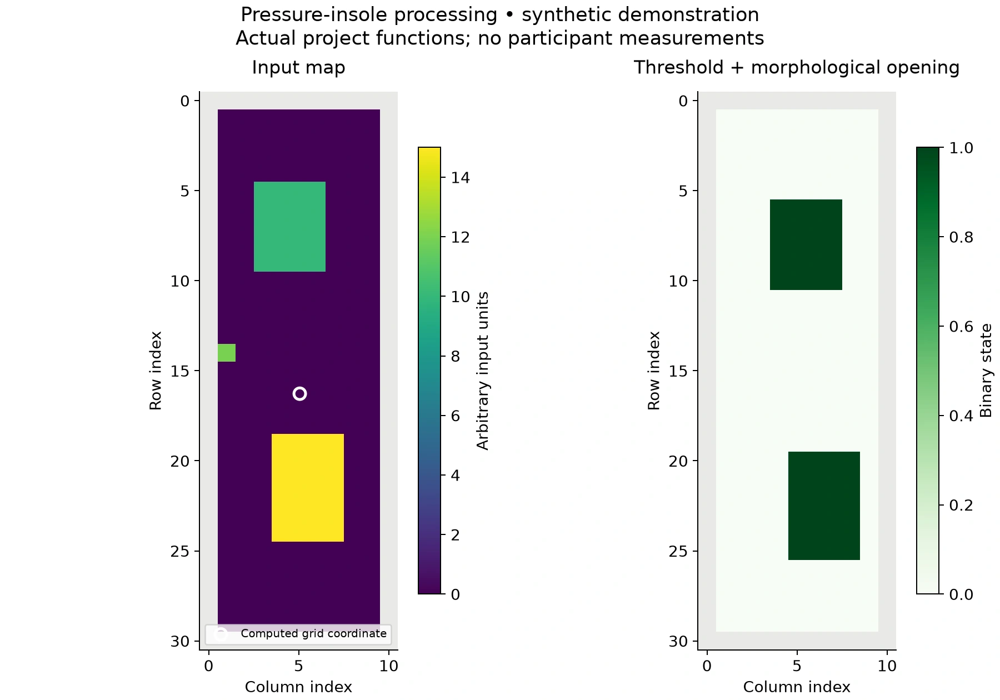

From collecting a signal to using it.
My work in Georgia Tech’s EPIC Lab spans Vicon data collection and calibration, MATLAB automation, pressure-insole processing, feature extraction, research interfaces, and mechatronics support. I joined in August 2024 and am now in my fifth semester.
The common thread is making measurements usable: calibrating the collection system, organizing sensor data, and preparing it for analysis.
Make the insole data interpretable.
I worked on Python processing that parses named pressure-sensor columns into a fixed 31 × 11 map. The extracted features include pressure, center of pressure, active-sensor counts, and connected components.
Organizing the measurements spatially makes it possible to inspect where contact occurs, rather than treating every sensor column as an unrelated time series.
-
01
Collect & calibrate
Vicon and wearable sensor measurements
-
02
Organize & synchronize
Sensor channels, pressure maps, and timing
-
03
Extract & analyze
Pressure features and biomechanics estimates
Workflow summary; no participant data are shown.
Preserve the spatial meaning of each channel.
The pressure-insole work starts with named sensel columns and places them in a fixed 31 × 11 map. The geometry of that map matters: the same pressure values in the wrong positions would describe a different contact pattern.
| Stage | Output | Why it matters |
|---|---|---|
| Map sensor channels | Pressure measurements at defined grid locations. | Preserves the spatial relationship between sensing elements. |
| Extract pressure features | Pressure and center-of-pressure measures. | Summarizes loading and where it acts. |
| Describe contact | Active-sensor and connected-component features. | Distinguishes the amount and spatial organization of contact. |
| Prepare cross-system comparisons | Synchronized measurements for analysis. | Timing errors can change comparisons even when individual sensor signals look reasonable. |
The thesis comparison is ongoing. This page describes processing scope; it does not report final model accuracy, repeatability, or a completed comparison between platforms.
Compare the sensing platforms.
My undergraduate thesis, planned for Fall 2026 through Spring 2027, assesses deep-learning biomechanics estimates using reference wired, custom wired, and custom wireless sensing platforms.
The work includes developing an IMU platform through CAD, firmware, and data-collection software. My role covers processing, synchronization, analysis, visualization, and presentation.
See the IMU sensor-base CAD design ↗
This work is ongoing. Comparative performance and thesis conclusions are not yet reported here.
Run a known input through the processing code.
For this portfolio, I used a synthetic map with two contact patches and one isolated active cell as input to the project’s actual Python functions. The run exercised header parsing, placement in a 31 × 11 map, pressure summaries, thresholding, morphological opening, and connected components.
The implementation thresholds values at 5 and applies a 2 × 2 opening operation. On this input, the processed result contained 44 active cells in two components; the isolated cell was removed. Four consistency checks passed, including preservation of missing cells as NaN.
This is a demonstration added for the portfolio on 26 September 2026. Inputs use arbitrary units and contain no participant measurements. It checks specific code behavior, not biomechanical accuracy.

